项目成本管理
项目成本管理包括为使项目在批准的预算内完成而对成本进行规划、估算、预算、融资、筹资、管理和控制的各个过程，从而确保项目在批准的预算内完工。项目成本管理过程包括：
7.1 规划成本管理 — 确定如何估算、预算、管理、监督和控制项目成本的过程。
7.2 估算成本 — 对完成项目活动所需货币资源进行近似估算的过程。
7.3 制定预算 — 汇总所有单个活动或工作包的估算成本，建立一个经批准的成本基准的过程。
7.4 控制成本 — 监督项目状态，以更新项目成本和管理成本基准变更的过程。
图 7-1 概括了项目成本管理的各个过程。虽然在本《PMBOK® 指南》中，各项目成本管理过程以界限分明和相互独立的形式出现，但在实践中它们会以本指南无法全面详述的方式相互交叠和相互作用。这些过程不仅彼此相互作用，而且还与其他知识领域中的过程相互作用。
在某些项目，特别是范围较小的项目中，成本估算和成本预算之间的联系非常紧密，以至于可视为一个过程，由一个人在较短时间内完成。但本章仍然把这两个过程分开来介绍，因为它们所用的工具和技术各不相同。对成本的影响力在项目早期最大，因此尽早定义范围就至关重要（见 5.3 节）。
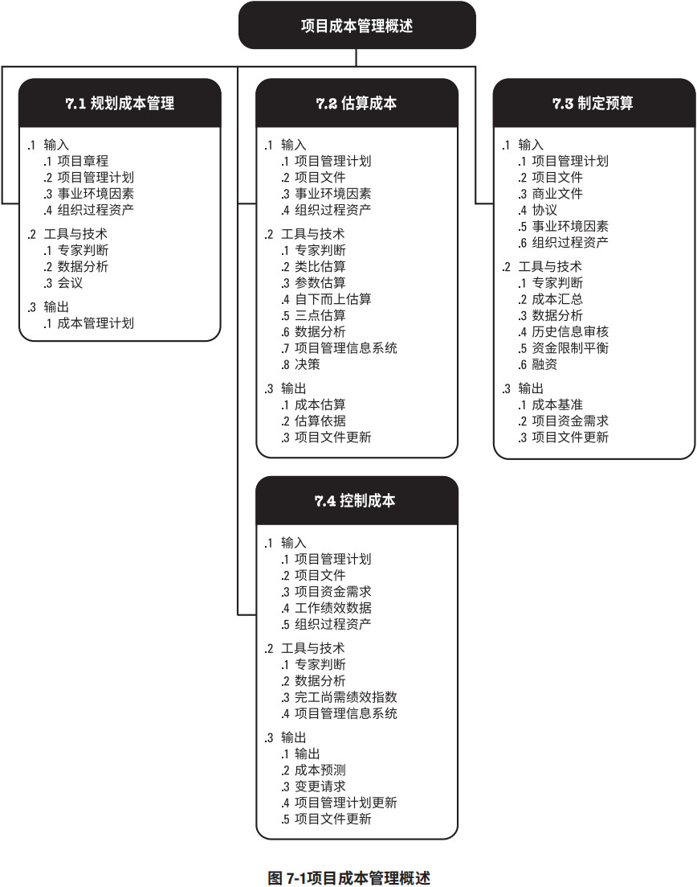
项目成本管理的核心概念
项目成本管理重点关注完成项目活动所需资源的成本，但同时也应考虑项目决策对项目产品、服务或成果的使用成本、维护成本和支持成本的影响。例如，限制设计审查的次数可降低项目成本，但可能增加由此带来的产品运营成本。
成本管理的另一个方面是认识到不同的相关方会在不同的时间，用不同的方法测算项目成本。例如，对于某采购品，可在做出采购决策、下达订单、实际交货、实际成本发生或进行项目会计记账时，测算其成本。在很多组织中，预测和分析项目产品的财务效益是在项目之外进行的，但对于有些项目，如固定资产投资项目，可在项目成本管理中进行这项预测和分析工作。在这种情况下，项目成本管理还需使用其他过程和许多通用财务管理技术，如投资回报率分析、现金流贴现分析和投资回收期分析等。
项目成本管理的趋势和新兴实践
在项目成本管理的实践中，通过对挣值管理 (EVM)的扩展，引入挣得进度 (ES) 这一概念。
ES 是 EVM 理论和实践的延伸。挣得进度理论用 ES 和实际时间 (AT) 替代了传统 EVM 所使用的进度偏差测量指标（挣值 – 计划价值），使用这种替代方法计算进度偏差 ES - AT，如果挣得进度大于 0，则表示项目进度提前了；换句话说，在某个给定的时间点，项目的挣值大于计划价值。使用挣得进度测量指标的进度绩效指数 (SPI) 为 ES 与 AT 之比，表示完成项目的工作效率。此外，挣得进度理论通过挣得进度、实际时间和估算持续时间，提供了预测项目完成日期的计算公式。
裁剪考虑因素
由于每个项目都是独特的，项目经理因此可能需要裁剪项目成本管理过程。裁剪时应考虑的因素包括（但不限于）：
- 知识管理。组织是否拥有易于使用的、正式的知识管理体系和财务数据库，并要求项目经理使用？
- 估算和预算。组织是否拥有正式或非正式的，与成本估算和预算相关的政策、程序和指南？
- 挣值管理。组织是否采用挣值管理来管理项目？
- 敏捷方法的使用。组织是否采用敏捷方法管理项目？这对成本估算有什么影响？
- 治理。组织是否拥有正式或非正式的审计和治理政策、程序和指南？
关于敏捷/适应型环境的考虑因素
对易变性高、范围并未完全明确、经常发生变更的项目，详细的成本计算可能没有多大帮助。在这种情况下，可以采用轻量级估算方法快速生成对项目人力成本的高层级预测，在出现变更时容易调整预测；而详细的估算适用于采用准时制的短期规划。
如果易变的项目也遵循严格的预算，通常需要更频繁地更改范围和进度计划，以始终保持在成本制约因素之内。
7.1 规划成本管理
规划成本管理是确定如何估算、预算、管理、监督和控制项目成本的过程。本过程的主要作用是，在整个项目期间为如何管理项目成本提供指南和方向。本过程仅开展一次或仅在项目的预定义点开展。图 7-2 描述本过程的输入、工具与技术和输出，图 7-3 是本过程的数据流向图。
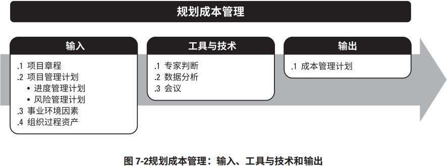
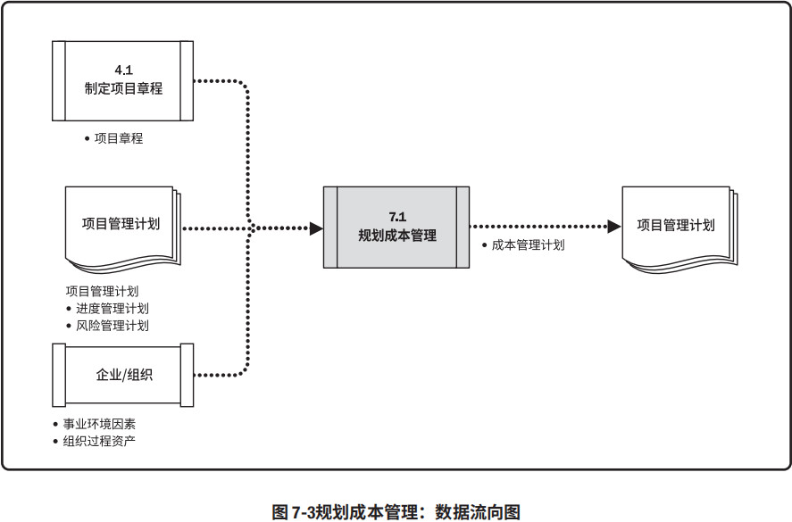
应该在项目规划阶段的早期就对成本管理工作进行规划，建立各成本管理过程的基本框架，以确保各过程的有效性及各过程之间的协调性。成本管理计划是项目管理计划的组成部分，其过程及工具与技术应记录在成本管理计划中。
7.1.1 规划成本管理：输入
7.1.1.1 项目章程
见 4.1.3.1 节。项目章程规定了预先批准的财务资源，可据此确定详细的项目成本。项目章程所规 定的项目审批要求，也对项目成本管理有影响。7.1.1.2 项目管理计划
见 4.2.3.1 节。项目管理计划组件包括（但不限于）：- 进度管理计划。见 6.1.3.1 节。进度管理计划确定了编制、监督和控制项目进度的准则和活动，同时也提供了影响成本估算和管理的过程及控制方法。
- 风险管理计划。见 11.1.3.1 节。风险管理计划提供了识别、分析和监督风险的方法，同时也提供了影响成本估算和管理的过程及控制方法。
7.1.1.3 事业环境因素
能够影响规划成本管理过程的事业环境因素包括（但不限于）：- 能够影响成本管理的组织文化和组织结构；
- 市场条件，决定着在当地及全球市场上可获取哪些产品、服务和成果；
- 货币汇率，用于换算发生在多个国家的项目成本；
- 发布的商业信息，经常可以从商业数据库中获取资源成本费率及相关信息，而这些数据库动态跟踪具有相应技能的人力资源的成本数据，也提供材料与设备的标准成本数据；还可以从卖方公布的价格清单中获取相关信息；
- 项目管理信息系统，可为管理成本提供多种方案；
- 不同地区的生产率差异，可能会对项目成本造成巨大影响。
7.1.1.4 组织过程资产
能够影响规划成本管理过程的组织过程资产包括（但不限于）：- 财务控制程序（如定期报告、必需的费用与支付审查、会计编码及标准合同条款等）；
- 历史信息和经验教训知识库；
- 财务数据库；
- 现有的正式和非正式的与成本估算和预算有关的政策、程序和指南。
7.1.2 规划成本管理：工具与技术
7.1.2.1 专家判断
见 4.1.2.1 节。应征求具备以下专业知识或接受过相关培训的个人或小组的意见：- 以往类似项目；
- 来自行业、学科和应用领域的信息；
- 成本估算和预算；
- 挣值管理。
7.1.2.2 数据分析
适用于本过程的数据分析技术包括（但不限于）备选方案分析。备选方案分析可包括审查筹资的战略方法，如自筹资金、股权投资、借贷投资等，还可以包括对筹集项目资源的方法（如自制、采购、租用或租赁）的考量。7.1.2.3 会议
项目团队可能举行规划会议来制定成本管理计划。参会者可能包括项目经理、项目发起人、选定的项目团队成员、选定的相关方、项目成本负责人，以及其他必要人员。7.1.3 规划成本管理：输出
7.1.3.1 成本管理计划
成本管理计划是项目管理计划的组成部分，描述将如何规划、安排和控制项目成本。成本管理过程及其工具与技术应记录在成本管理计划中。例如，在成本管理计划中规定：
- 计量单位。需要规定每种资源的计量单位，例如用于测量时间的人时数、人天数或周数，用于计量数量的米、升、吨、千米或立方码，或者用货币表示的总价。
- 精确度。根据活动范围和项目规模，设定成本估算向上或向下取整的程度（例如 995.59 美元取整为 1,000 美元）。
- 准确度。为活动成本估算规定一个可接受的区间（如 ±10%），其中可能包括一定数量的 应急储备
- 组织程序链接。工作分解结构（见 5.4 节）为成本管理计划提供了框架，以便据此规范地开展 成本估算、预算和控制。在项目成本核算中使用的 WBS 组成部分，称为控制账户（CA），每个 控制账户都有唯一的编码或账号，直接与执行组织的会计制度相联系。
- 控制临界值。可能需要规定偏差临界值，用于监督成本绩效。它是在需要采取某种措施前， 允许出现的最大差异，通常用偏离基准计划的百分数来表示。
- 绩效测量规则。需要规定用于绩效测量的挣值管理（EVM）规则。例如，成本管理计划应该：
- 定义 WBS 中用于绩效测量的控制账户；
- 确定拟用的 EVM 技术（如加权里程碑法、固定公式法、完成百分比法等）；
- 规定跟踪方法，以及用于计算项目完工估算（EAC）的 EVM 公式，该公式计算出的结果可用 于验证通过自下而上方法得出的完工估算。
- 报告格式。需要规定各种成本报告的格式和编制频率。
- 其他细节。关于成本管理活动的其他细节包括（但不限于）：
- 对战略筹资方案的说明；
- 处理汇率波动的程序；
- 记录项目成本的程序。
7.2 估算成本
估算成本是对完成项目工作所需资源成本进行近似估算的过程。本过程的主要作用是，确定项目所需的资金。本过程应根据需要在整个项目期间定期开展。图 7-4 描述本过程的输入、工具与技术和输出，图 7-5 是本过程的数据流向图。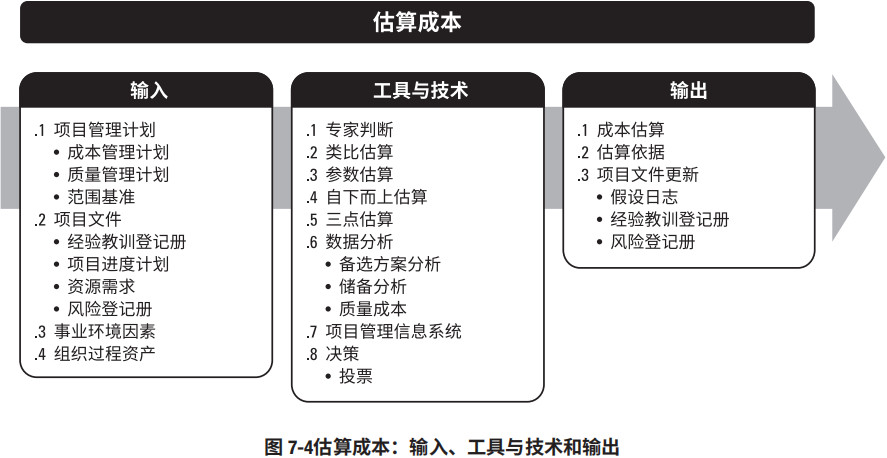
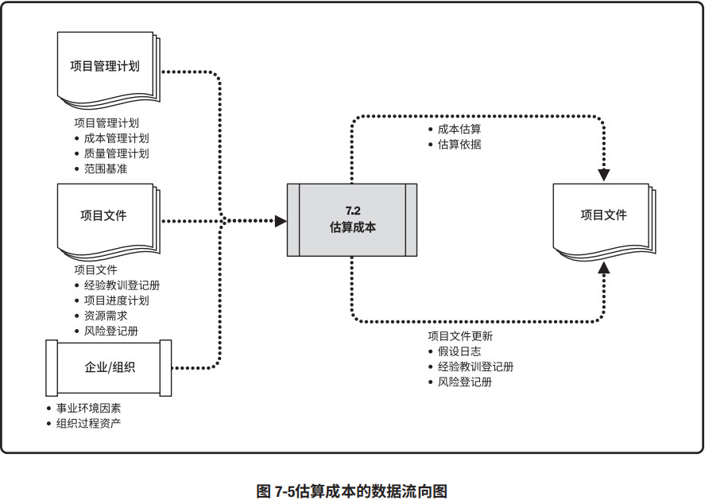
成本估算是对完成活动所需资源的可能成本的量化评估，是在某特定时点，根据已知信息所做出的成本预测。在估算成本时，需要识别和分析可用于启动与完成项目的备选成本方案；需要权衡备选成本方案并考虑风险，如比较自制成本与外购成本、购买成本与租赁成本及多种资源共享方案，以优化项目成本。
通常用某种货币单位（如美元、欧元、日元等）进行成本估算，但有时也可采用其他计量单位，如人时数或人天数，以消除通货膨胀的影响，便于成本比较。
在项目过程中，应该随着更详细信息的呈现和假设条件的验证，对成本估算进行审查和优化。在项目生命周期中，项目估算的准确性亦将随着项目的进展而逐步提高。例如，在启动阶段可得出项目的粗略量级估算（Rough Order of Magnitude，ROM），其区间为 −25% 到 +75%；之后，随着信息越来越详细，确定性估算的区间可缩小至 −5% 到 +10%。某些组织已经制定出相应的指南，规定何时进行优化，以及每次优化所要达到的置信度或准确度。
进行成本估算，应该考虑将向项目收费的全部资源，包括（但不限于）人工、材料、设备、服务、设施，以及一些特殊的成本种类，如通货膨胀补贴、融资成本或应急成本。成本估算可在活动层级呈现，也可以汇总形式呈现。
7.2.1 估算成本：输入
7.2.1.1 项目管理计划
见 4.2.3.1 节。项目管理计划组件包括（但不限于）：- 成本管理计划。见 7.1.3.1 节。成本管理计划描述了可使用的估算方法以及成本估算需要达到的准确度和精确度。
- 质量管理计划。见 8.1.3.1 节。质量管理计划描述了项目管理团队为实现一系列项目质量目标所需的活动和资源。
- 范围基准。见 5.4.3.1 节。范围基准包括项目范围说明书、WBS 和 WBS 词典：
7.2.1.2 项目文件
可作为本过程输入的项目文件包括（但不限于）：- 经验教训登记册。见 4.4.3.1 节。项目早期与制定成本估算有关的经验教训可以运用到项目后期阶段，以提高成本估算的准确度和精确度。
- 项目进度计划。见 6.5.3.2 节。进度计划包括项目可用的团队和实物资源的类型、数量和可用时间长短。如果资源成本取决于使用时间的长短，并且成本出现季节波动，则持续时间估算（见 6.4.3.1 节）会对成本估算产生影响。进度计划还为包含融资成本（包括利息）的项目提供有用信息。
- 资源需求。见 9.2.3.1 节。资源需求明确了每个工作包或活动所需的资源类型和数量。
- 风险登记册。见 11.2.3.1 节。风险登记册包含了已识别并按优先顺序排列的单个项目风险的详细信息，及针对这些风险采取的应对措施。风险登记册还提供了可用于估算成本的详细信息。
7.2.1.3 事业环境因素
会影响估算成本过程的事业环境因素包括（但不限于）：- 市场条件。可以从市场上获得什么产品、服务和成果，可以从谁那里、以什么条件获得。地区和/或全球性的供求情况会显著影响资源成本。
- 发布的商业信息。经常可以从商业数据库中获取资源成本费率及相关信息，而这些数据库动态跟踪具有相应技能的人力资源的成本数据，也提供材料与设备的标准成本数据；还可以从卖方公布的价格清单中获取相关信息。
- 汇率和通货膨胀率。对于持续多年、涉及多种货币的大规模项目，需要了解汇率波动和通货膨胀，并将其纳入估算成本过程。
7.2.1.4 组织过程资产
会影响估算成本过程的组织过程资产包括（但不限于）：- 成本估算政策；
- 成本估算模板；
- 历史信息和经验教训知识库。
7.2.2 估算成本：工具与技术
7.2.2.1 专家判断
见 4.1.2.1 节。应征求具备以下专业知识或接受过相关培训的个人或小组的意见：- 以往类似项目；
- 来自行业、学科和应用领域的信息；
- 成本估算方法。
7.2.2.2 类比估算
见 6.4.2.2 节。成本类比估算使用以往类似项目的参数值或属性来估算。项目的参数值和属性包括（但不限于）范围、成本、预算、持续时间和规模指标（如尺寸、重量），类比估算以这些项目参数值或属性为基础来估算当前项目的同类参数或指标。7.2.2.3 参数估算
见 6.4.2.3 节。参数估算是指利用历史数据之间的统计关系和其他变量（如建筑施工中的平方英尺），来进行项目工作的成本估算，参数估算的准确性取决于参数模型的成熟度和基础数据的可靠性。参数估算可以针对整个项目或项目中的某个部分，并可与其他估算方法联合使用。7.2.2.4 自下而上估算
见 6.4.2.5 节。自下而上估算是对工作组成部分进行估算的一种方法。首先对单个工作包或活动的成本进行最具体、细致的估算，然后把这些细节性成本向上汇总或“滚动”到更高层次，用于后续报告和跟踪。自下而上估算的准确性及其本身所需的成本，通常取决于单个活动或工作包的规模或其他属性。7.2.2.5 三点估算
见 6.4.2.4 节。通过考虑估算中的不确定性与风险，使用三种估算值来界定活动成本的近似区间，可以提高单点成本估算的准确性：- 最可能成本（cM）。对所需进行的工作和相关费用进行比较现实的估算，所得到的活动成本。
- 最乐观成本（cO）。基于活动的最好情况所得到的成本。
- 最悲观成本（cP）。基于活动的最差情况所得到的成本。
基于活动成本在三种估算值区间内的假定分布情况，使用公式来计算预期成本（cE）。两种常用的公式是三角分布和贝塔分布，其计算公式分别为：
- 三角分布。cE = (cO + cM + cP) / 3
- 贝塔分布。cE = (cO + 4cM + cP) / 6
7.2.2.6 数据分析
适用于估算成本过程的数据分析技术包括（但不限于）：备选方案分析
备选方案分析是一种对已识别的可选方案进行评估的技术，用来决定选择哪种方案或使用何种方法来执行项目工作。例如评估购买和制造可交付成果分别对成本、进度、资源和质量的影响。
储备分析
为应对成本的不确定性，成本估算中可以包括应急储备（有时称为“应急费用”）。应急储备是包含在成本基准内的一部分预算，用来应对已识别的风险；应急储备还通常是预算的一部分，用来应对那些会影响项目的“已知 — 未知”风险。例如，可以预知有些项目可交付成果需要返工，却不知道返工的工作量是多少。可以预留应急储备来应对这些未知数量的返工工作。小至某个具体活动，大到整个项目，任何层级都可有其应急储备。应急储备可取成本估算值的某一百分比、某个固定值，或者通过定量分析来确定；而随着项目信息越来越明确，可以动用、减少或取消应急储备。应该在成本文件中清楚地列出应急储备。应急储备是成本基准的一部分，也是项目整体资金需求的一部分。
质量成本
在估算时，可能要用到关于质量成本（见 8.1.2.3 节）的各种假设，这包括对以下情况进行评估：是为达到要求而增加投入，还是承担不符合要求而造成的成本；是寻求短期成本降低，还是承担产品生命周期后期频繁出现问题的后果。
7.2.2.7 项目管理信息系统 (PMIS)
见 4.3.2.2 节。项目管理信息系统可包括电子表单、模拟软件以及统计分析工具，可用来辅助成本估算。这些工具能简化某些成本估算技术的使用，使人们能快速考虑多种成本估算方案。7.2.2.8 决策
适用于估算成本过程的决策技术包括（但不限于）投票。如 5.2.2.4 节所述，投票是为达成某种期望结果，而对多个未来行动方案进行评估的过程。这些技术可以调动团队成员的参与，提高估算的准确性，并提高对估算结果的责任感。7.2.3 估算成本：输出
7.2.3.1 成本估算
成本估算包括对完成项目工作可能需要的成本、应对已识别风险的应急储备，以及应对计划外工作的管理储备的量化估算。成本估算可以是汇总的或详细分列的。成本估算应覆盖项目所使用的全部资源，包括（但不限于）直接人工、材料、设备、服务、设施、信息技术，以及一些特殊的成本种类，如融资成本（包括利息）、通货膨胀补贴、汇率或成本应急储备。如果间接成本也包含在项目估算中，则可在活动层次或更高层次上计列间接成本。7.2.3.2 估算依据
成本估算所需的支持信息的数量和种类，因应用领域而异，不论其详细程度如何，支持性文件都应该清晰、完整地说明成本估算是如何得出的。成本估算的支持信息可包括：
- 关于估算依据的文件（如估算是如何编制的）；
- 关于全部假设条件的文件；
- 关于各种已知制约因素的文件；
- 有关已识别的、在估算成本时应考虑的风险的文件；
- 对估算区间的说明（如“10,000美元 ±10%”就说明了预期成本的所在区间）；
- 对最终估算的置信水平的说明。
7.2.3.3 项目文件更新
可在本过程更新的项目文件包括（但不限于）：- 假设日志。见 4.1.3.2 节。在成本估算过程中可能会做出新的假设、识别新的制约因素，或者重新审查和修改已有的假设条件或制约因素。假设日志应根据这些新信息做出相应更新。
- 经验教训登记册。见 4.4.3.1 节。有效和高效地估算成本的技术，需要更新在经验教训登记册中。
- 风险登记册。见 11.2.3.1 节。在估算成本过程中选择和商定风险应对措施时，可能需要更新风险登记册。
7.3 制定预算
制定预算是汇总所有单个活动或工作包的估算成本，建立一个经批准的成本基准的过程。本过程的主要作用是，确定可据以监督和控制项目绩效的成本基准。本过程仅开展一次或仅在项目的预定义点开展。图 7-6 描述本过程的输入、工具与技术和输出，图 7-7 是本过程的数据流向图。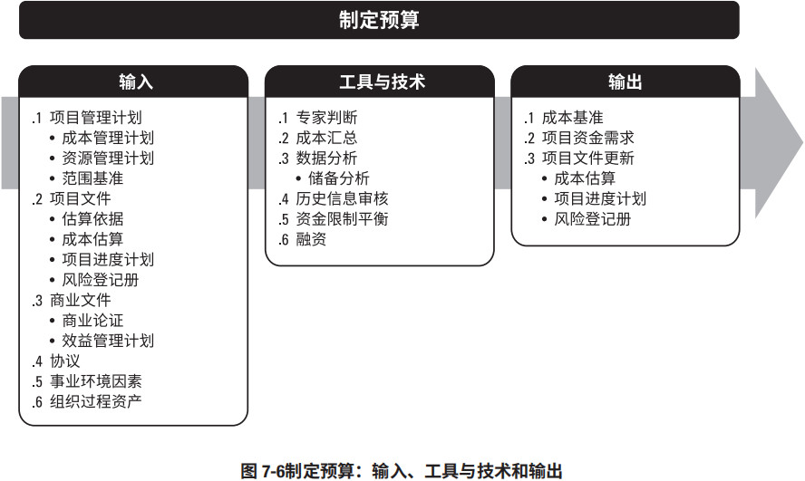
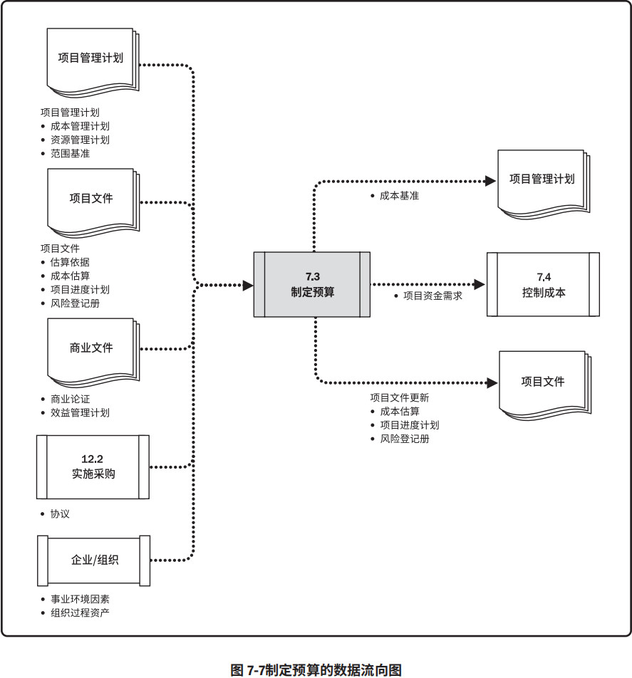
项目预算包括经批准用于执行项目的全部资金，而成本基准是经过批准且按时间段分配的项目预算，包括应急储备，但不包括管理储备。
7.3.1 制定预算：输入
7.3.1.1 项目管理计划
见 4.2.3.1 节。项目管理计划组件包括（但不限于）：- 成本管理计划。见 7.1.3.1 节。成本管理计划描述了如何将项目成本纳入项目预算中。
- 资源管理计划。见 9.1.3.1 节。资源管理计划提供了有关（人力和其他资源的）费率、差旅成本估算，和其他可预见成本的信息，这些信息是估算整个项目预算时必须考虑的因素。
- 范围基准。见 5.4.3.1 节。范围基准包括项目范围说明书、WBS 和 WBS 词典的详细信息，可用于成本估算和管理。
7.3.1.2 项目文件
可作为本过程输入的项目文件包括（但不限于）：- 估算依据。见 6.4.3.2 节。在估算依据中包括基本的假设条件，例如，项目预算中是否应该包含间接成本或其他成本。
- 成本估算。见 7.2.3.1 节。各工作包内每个活动的成本估算汇总后，即得到各工作包的成本估算。
- 项目进度计划。见 6.5.3.2 节。项目进度计划包括项目活动、里程碑、工作包和控制账户的计划开始和完成日期。可根据这些信息，把计划成本和实际成本汇总到相应的日历时段中。
- 风险登记册。见 11.2.3.1 节。应该审查风险登记册，以确定如何汇总风险应对成本。风险登记册的更新包含在项目文件更新中，见 11.5.3.3 节。
7.3.1.3 商业文件
见 1.2.6. 节。可作为本过程输入的商业文件包括（但不限于）：- 商业论证。商业论证识别了项目成功的关键因素，包括财务成功因素。
- 效益管理计划。效益管理计划包括目标效益，例如净现值的计算、实现效益的时限，以及与效益有关的测量指标。
7.3.1.4 协议
见 12.2.3.2 节。在制定预算时，需要考虑将要或已经采购的产品、服务或成果的成本，以及适用的协议信息。7.3.1.5 事业环境因素
会影响估算成本过程的事业环境因素包括（但不限于）汇率。对于持续多年、涉及多种货币的大规模项目，需要了解汇率波动并将其纳入制定预算过程。7.3.1.6 组织过程资产
会影响制定预算过程的组织过程资产包括（但不限于）：- 现有的正式和非正式的与成本预算有关的政策、程序和指南；
- 历史信息和经验教训知识库；
- 成本预算工具；
- 报告方法。
7.3.2 制定预算：工具与技术
7.3.2.1 专家判断
见 4.1.2.1 节。应征求具备以下专业知识或接受过相关培训的个人或小组的意见：- 以往类似项目；
- 来自行业、学科和应用领域的信息；
- 财务原则；
- 资金需求和来源。
7.3.2.2 成本汇总
先把成本估算汇总到 WBS 中的工作包，再由工作包汇总至 WBS 的更高层次（如控制账户），最终得出整个项目的总成本。7.3.2.3 数据分析
可用于制定预算过程的数据分析技术包括（但不限于）可以建立项目管理储备的储备分析。管理储备是为了管理控制的目的而特别留出的项目预算，用来应对项目范围中不可预见的工作，目的是用来应对会影响项目的“未知 — 未知”风险。管理储备不包括在成本基准中，但属于项目总预算和资金需求的一部分。当动用管理储备资助不可预见的工作时，就要把动用的管理储备增加到成本基准中，从而导致成本基准变更。7.3.2.4 历史信息审核
审核历史信息有助于进行参数估算或类比估算。历史信息可包括各种项目特征（参数），它们用于建立数学模型预测项目总成本。这些数学模型可以是简单的（例如，建造住房的总成本取决于单位面积建造成本），也可以是复杂的（例如，软件开发项目的成本模型中有多个变量，且每个变量又受许多因素的影响）。类比和参数模型的成本及准确性可能差别很大。在以下情况下，它们将最为可靠：
- 用来建立模型的历史信息准确；
- 模型中的参数易于量化；
- 模型可以调整，以便对大项目、小项目和各项目阶段都适用。
7.3.2.5 资金限制平衡
应该根据对项目资金的任何限制，来平衡资金支出。如果发现资金限制与计划支出之间的差异，则可能需要调整工作的进度计划，以平衡资金支出水平。这可以通过在项目进度计划中添加强制日期来实现。7.3.2.6 融资
融资是指为项目获取资金。长期的基础设施、工业和公共服务项目通常会寻求外部融资。如果项目使用外部资金，出资实体可能会提出一些必须满足的要求。7.3.3 制定预算：输出
7.3.3.1 成本基准
成本基准是经过批准的、按时间段分配的项目预算，不包括任何管理储备，只有通过正式的变更控制程序才能变更，用作与实际结果进行比较的依据。成本基准是不同进度活动经批准的预算的总和。项目预算和成本基准的各个组成部分，如图 7-8 所示。先汇总各项目活动的成本估算及其应急储备（见 7.2.2.6 节），得到相关工作包的成本；然后汇总各工作包的成本估算及其应急储备，得到控制账户的成本；接着再汇总各控制账户的成本，得到成本基准。由于成本基准中的成本估算与进度活动直接关联，因此就可按时间段分配成本基准，得到一条 S 曲线，如图 7-9 所示。对于使用挣值管理的项目，成本基准指的是绩效测量基准。
最后，在成本基准之上增加管理储备（见 7.2.2.3 节），得到项目预算。当出现有必要动用管理储备的变更时，则应该在获得变更控制过程的批准之后，把适量的管理储备移入成本基准中。
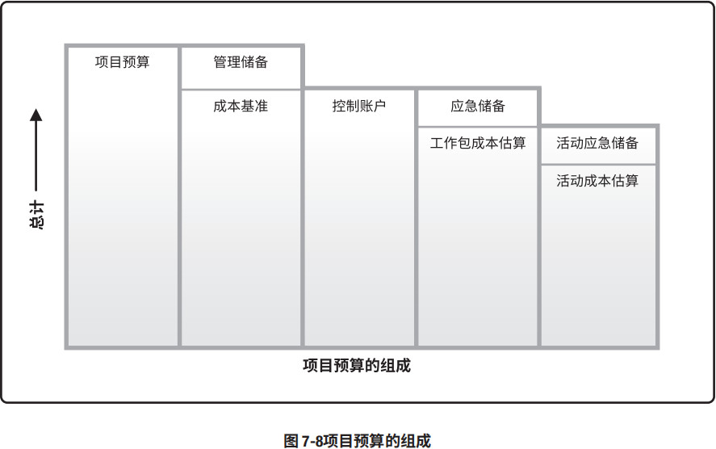
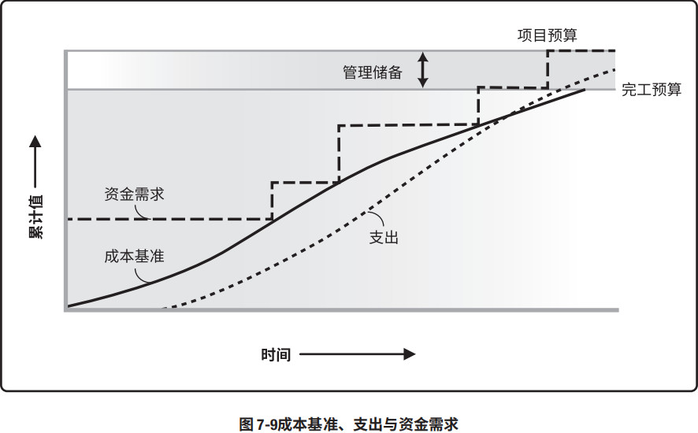
7.3.3.2 项目资金需求
根据成本基准，确定总资金需求和阶段性（如季度或年度）资金需求。成本基准中既包括预计支出及预计债务。项目资金通常以增量的方式投入，并且可能是非均衡的，呈现出图 7-9 中所示的阶梯状。如果有管理储备，则总资金需求等于成本基准加管理储备。在资金需求文件中，也可说明资金来源。7.3.3.3 项目文件更新
可在本过程更新的项目文件包括（但不限于）：- 成本估算。见 7.2.3.1 节。更新成本估算，以记录任何额外信息。
- 项目进度计划。见 6.5.3.2 节。项目进度计划可能记录了各项活动的估算成本。
- 风险登记册。见 11.2.3.1 节。记录在本过程中识别的新风险于风险登记册中，并通过风险管理过程进行管理。
7.4 控制成本
控制成本是监督项目状态，以更新项目成本和管理成本基准变更的过程。本过程的主要作用是，在整个项目期间保持对成本基准的维护。本过程需要在整个项目期间开展。图 7-10 描述本过程的输入、工具与技术和输出，图 7-11 是本过程的数据流向图。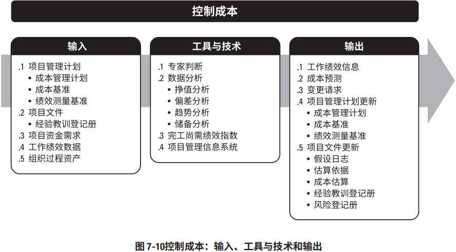
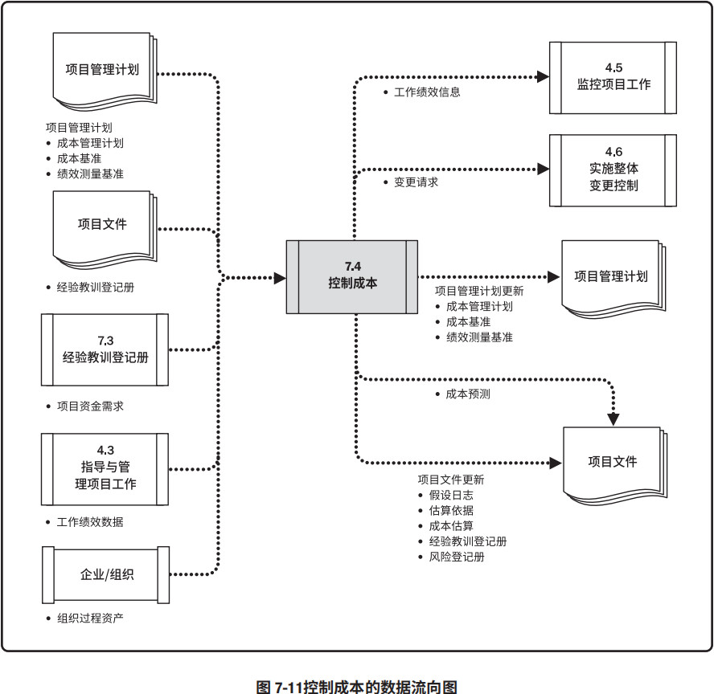
要更新预算，就需要了解截至目前的实际成本。只有经过实施整体变更控制过程（见 4.6 节）的批准，才可以增加预算。只监督资金的支出，而不考虑由这些支出所完成的工作的价值，对项目没有什么意义，最多只能跟踪资金流。所以在成本控制中，应重点分析项目资金支出与相应完成的工作之间的关系。有效成本控制的关键在于管理经批准的成本基准。
项目成本控制包括：
- 对造成成本基准变更的因素施加影响；
- 确保所有变更请求都得到及时处理；
- 当变更实际发生时，管理这些变更；
- 确保成本支出不超过批准的资金限额，既不超出按时段、按 WBS 组件、按活动分配的限额， 也不超出项目总限额；
- 监督成本绩效，找出并分析与成本基准间的偏差；
- 对照资金支出，监督工作绩效；
- 防止在成本或资源使用报告中出现未经批准的变更；
- 向相关方报告所有经批准的变更及其相关成本；
- 设法把预期的成本超支控制在可接受的范围内。
7.4.1 控制成本：输入
7.4.1.1 项目管理计划
见 4.2.3.1 节。项目管理计划组件包括（但不限于）：- 成本管理计划。见 7.1.3.1 节。成本管理计划描述将如何管理和控制项目成本。
- 成本基准。见 7.3.3.1 节。把成本基准与实际结果相比，以判断是否需要进行变更或采取纠正或预防措施。
- 绩效测量基准。见 4.2.3.1 节。使用挣值分析时，将绩效测量基准与实际结果比较，以决定是否有必要进行变更、采取纠正措施或预防措施。
7.4.1.2. 项目文件
可作为本过程输入的项目文件包括（但不限于）经验教训登记册。见 4.4.3.1 节。在项目早期获得的经验教训可以运用到后期阶段，以改进成本控制。7.4.1.3 项目资金需求
见 7.3.3.2 节。项目资金需求包括预计支出及预计债务。7.4.1.4 工作绩效数据
见 4.3.3.2 节。工作绩效数据包含关于项目状态的数据，例如哪些成本已批准、发生、支付和开具发票。7.4.1.5 组织过程资产
会影响控制成本过程的组织过程资产包括（但不限于）：- 现有的正式和非正式的与成本控制相关的政策、程序和指南；
- 成本控制工具；
- 可用的监督和报告方法。
7.4.2 控制成本：工具与技术
7.4.2.1 专家判断
见 4.1.2.1 节。控制成本过程中的专家判断包括（但不限于）：- 偏差分析；
- 挣值分析；
- 预测；
- 财务分析。
7.4.2.2 数据分析
适用于控制成本过程的数据分析技术包括（但不限于）：挣值分析 (EVA)
挣值分析将实际进度和成本绩效与绩效测量基准进行比较。EVM把范围基准、成本基准和进度基准整合起来，形成绩效测量基准。它针对每个工作包和控制账户，计算并监测以下三个关键指标：
- 计划价值。计划价值（PV）是为计划工作分配的经批准的预算，它是为完成某活动或工作分解结构 (WBS) 组成部分而准备的一份经批准的预算，不包括管理储备。应该把该预算分配至项目生命周期的各个阶段；在某个给定的时间点，计划价值代表着应该已经完成的工作。PV的总和有时被称为绩效测量基准（PMB），项目的总计划价值又被称为完工预算（BAC）。
- 挣值。挣值（EV）是对已完成工作的测量值，用该工作的批准预算来表示，是已完成工作的经批准的预算。EV 的计算应该与 PMB 相对应，且所得的 EV 值不得大于相应组件的 PV 总预算。EV 常用于计算项目的完成百分比，应该为每个 WBS 组件规定进展测量准则，用于考核正在实施的工作。项目经理既要监测 EV 的增量，以判断当前的状态，又要监测 EV 的累计值，以判断长期的绩效趋势。
- 实际成本。实际成本（AC）是在给定时段内，执行某活动而实际发生的成本，是为完成与 EV 相对应的工作而发生的总成本。AC 的计算方法必须与 PV 和 EV 的计算方法保持一致（例如，都只计算直接小时数，都只计算直接成本，或都计算包含间接成本在内的全部成本）。AC 没有上限，为实现 EV 所花费的任何成本都要计算进去。
偏差分析
见 4.5.2.2 节。在 EVM 中，偏差分析用以解释成本偏差（CV = EV – AC）、进度偏差（SV = EV – PV）和完工偏差（VAC = BAC – EAC）的原因、影响和纠正措施。成本和进度偏差是最需要分析的两种偏差。对于不使用正规挣值分析的项目，可开展类似的偏差分析，通过比较计划成本和实际成本，来识别成本基准与实际项目绩效之间的差异；然后可以实施进一步的分析，以判定偏离进度基准的原因和程度，并决定是否需要采取纠正或预防措施。可通过成本绩效测量来评价偏离原始成本基准的程度。项目成本控制的重要工作包括：判定偏离成本基准（见 7.3.3.1 节）的原因和程度，并决定是否需要采取纠正或预防措施。随着项目工作的逐步完成，偏差的可接受范围（常用百分比表示）将逐步缩小。偏差分析包括（但不限于）：
- 进度偏差。进度偏差（SV）是测量进度绩效的一种指标，表示为挣值与计划价值之差。它是指在某个给定的时点，项目提前或落后的进度，它是测量项目进度绩效的一种指标，等于挣值（EV）减去计划价值（PV）。EVA 进度偏差是一种有用的指标，可表明项目进度是落后还是提前于进度基准。当项目完工时，全部的计划价值都将实现（即成为挣值），所以 EVA 进度偏差最终将等于零。最好把进度偏差与关键路径法 (CPM) 和风险管理一起使用。公式：SV = EV – PV。
- 成本偏差。成本偏差（CV）是在某个给定时点的预算亏空或盈余量，表示为挣值与实际成本之差。它是测量项目成本绩效的一种指标，等于挣值（EV）减去实际成本（AC）。项目结束时的成本偏差，就是完工预算（BAC）与实际成本之间的差值。由于成本偏差指明了实际绩效与成本支出之间的关系，所以非常重要。负的 CV 一般都是不可挽回的。公式：CV = EV – AC。
- 进度绩效指数。进度绩效指数（SPI）是测量进度效率的一种指标，表示为挣值与计划价值之比，反映了项目团队完成工作的效率。有时与成本绩效指数（CPI）一起使用，以预测项目的最终完工估算。当 SPI 小于 1.0 时，说明已完成的工作量未达到计划要求；当 SPI 大于 1.0 时，则说明已完成的工作量超过计划。由于 SPI 测量的是项目的总工作量，所以还需要对关键路径上的绩效进行单独分析，以确认项目是否将比计划完成日期提前或推迟完工。SPI 等于 EV 与 PV 的比值。公式：SPI = EV/PV。
- 成本绩效指数。成本绩效指数（CPI）是测量预算资源的成本效率的一种指标，表示为挣值与实际成本之比。它是最关键的 EVA 指标，用来测量已完成工作的成本效率。当 CPI 小于 1.0 时，说明已完成工作的成本超支；当 CPI 大于 1.0 时，则说明到目前为止成本有结余。CPI 等于 EV 与 AC 的比值。公式：CPI = EV/AC。
趋势分析
见 4.5.2.2 节。趋势分析旨在审查项目绩效随时间的变化情况，以判断绩效是正在改善还是正在恶化。图形分析技术有助于了解截至目前的绩效情况，并把发展趋势与未来的绩效目标进行比较，如 BAC 与EAC、预测完工日期与计划完工日期的比较。趋势分析技术包括（但不限于）：
- 图表。在挣值分析中，对计划价值、挣值和实际成本这三个参数，既可以分阶段（通常以周或月为单位）进行监督和报告，也可以针对累计值进行监督和报告。图 7-12 以 S 曲线展示了某个项目的 EV 数据，该项目预算超支且进度落后。

- 预测。随着项目进展，项目团队可根据项目绩效，对完工估算（EAC）进行预测，预测的结果可能与完工预算（BAC）存在差异。如果 BAC 已明显不再可行，则项目经理应考虑对EAC进行预测。预测EAC是根据当前掌握的绩效信息和其他知识，预计项目未来的情况和事件。预测要根据项目执行过程中所提供的工作绩效数据（见 4.3.3.2 节）来产生、更新和重新发布。工作绩效信息包含项目过去的绩效，以及可能在未来对项目产生影响的任何信息。
在计算 EAC 时，通常用已完成工作的实际成本，加上剩余工作的完工尚需估算（ETC）。项目团队要根据已有的经验，考虑实施 ETC 工作可能遇到的各种情况。把挣值分析与手工预测 EAC 方法联合起来使用，效果会更佳。由项目经理和项目团队手工进行的自下而上汇总方法，就是一种最普通的 EAC 预测方法。
项目经理所进行的自下而上的 EAC 估算，就是以已完成工作的实际成本为基础，并根据已积累的经验来为剩余项目工作编制一个新估算。公式：EAC = AC + 自下而上的 ETC。
可以很方便地把项目经理手工估算的 EAC 与计算得出的一系列 EAC 作比较，这些计算得出的EAC 代表了不同的风险情景。在计算 EAC 值时，经常会使用累计 CPI 和累计 SPI 值。尽管可以用许多方法来计算基于 EVM 数据的 EAC 值，但下面只介绍最常用的三种方法：
- 假设将按预算单价完成 ETC 工作。这种方法承认以实际成本表示的累计实际项目绩效（不论好坏），并预计未来的全部 ETC 工作都将按预算单价完成。如果目前的实际绩效不好，则只有在进行项目风险分析并取得有力证据后，才能做出“未来绩效将会改进”的假设。公式：EAC = AC +（BAC – EV）。
- 假设以当前 CPI 完成 ETC 工作。这种方法假设项目将按截至目前的情况继续进行，即 ETC 工作将按项目截至目前的累计成本绩效指数（CPI）实施。公式：EAC = BAC/CPI。
- 假设 SPI 与 CPI 将同时影响 ETC 工作。在这种预测中，需要计算一个由成本绩效指数与进度绩效指数综合决定的效率指标，并假设 ETC 工作将按该效率指标完成。如果项目进度对 ETC 有重要影响，这种方法最有效。使用这种方法时，还可以根据项目经理的判断，分别给 CPI 和 SPI 赋予不同的权重，如 80/20、50/50 或其他比率。公式：EAC = AC +［（BAC – EV）/（CPI x SPI）］。
储备分析
见 7.2.2.6 节。在控制成本过程中，可以采用储备分析来监督项目中应急储备和管理储备的使用情况，从而判断是否还需要这些储备，或者是否需要增加额外的储备。随着项目工作的进展，这些储备可能已按计划用于支付风险或其他应急情况的成本；反之，如果抓住机会节约了成本，节约下来的资金可能会增加到应急储备中，或作为盈利/利润从项目中剥离。
如果已识别的风险没有发生，就可能要从项目预算中扣除未使用的应急储备，为其他项目或运营腾出资源。同时，在项目中开展进一步风险分析，可能会发现需要为项目预算申请额外的储备。
7.4.2.3 完工尚需绩效指数
完工尚需绩效指数（TCPI）是一种为了实现特定的管理目标，剩余资源的使用必须达到的成本绩效指标，是完成剩余工作所需的成本与剩余预算之比。TCPI 是指为了实现具体的管理目标（如 BAC 或 EAC），剩余工作的实施必须达到的成本绩效指标。如果 BAC 已明显不再可行，则项目经理应考虑使用预测的 EAC。经过批准后，就用 EAC 取代 BAC。基于 BAC 的 TCPI 公式：TCPI =（BAC – EV）/（BAC – AC）。TCPI 的概念可用图 7-13 表示。其计算公式在图的左下角，用剩余工作（BAC 减去 EV）除以剩余资金（可以是 BAC 减去 AC，或 EAC 减去 AC）。
如果累计 CPI 低于基准（如图 7-13 所示），那么项目的全部剩余工作都应立即按 TCPI（BAC）（图 7-13 中最高的那条线）执行，才能确保实际总成本不超过批准的 BAC。至于所要求的这种绩效水平是否可行，就需要综合考虑多种因素（包括风险、项目剩余时间和技术绩效）后才能判断；如果不可行，就需要把项目未来所需的绩效水平调整为如 TCPI（EAC）线所示。基于 EAC 的 TCPI 公式： TCPI =（BAC – EV）/（EAC – AC）。表 7-1 列出了 EVM 的计算公式。
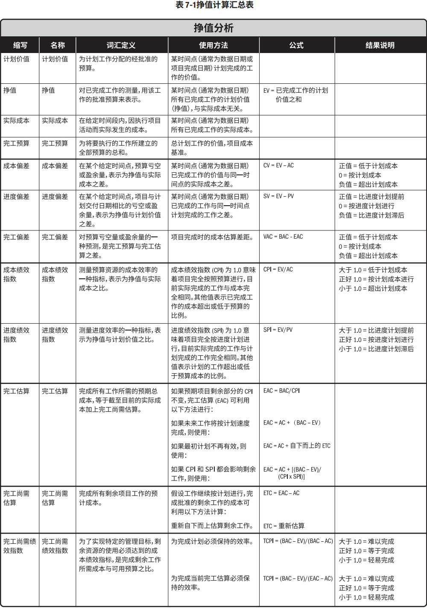
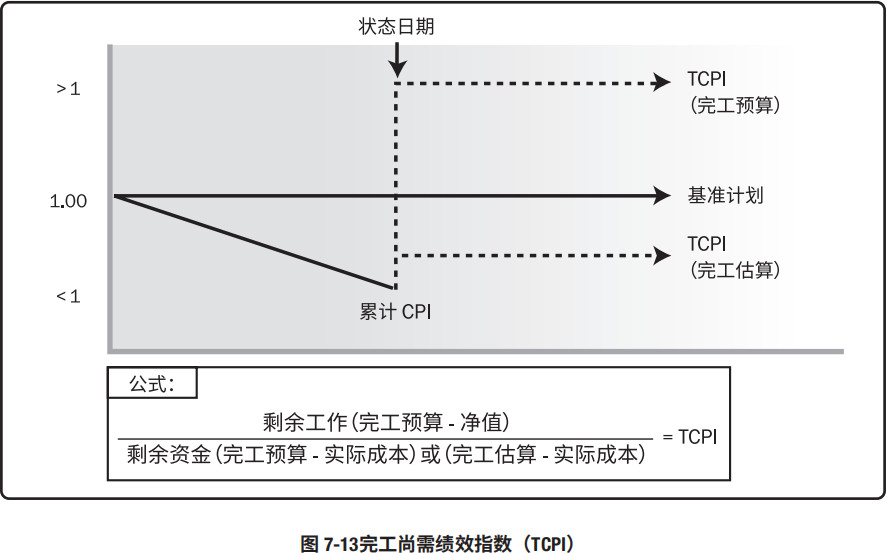
7.4.2.4 项目管理信息系统 (PMIS)
见 4.3.2.2 节。项目管理信息系统常用于监测 PV、EV 和 AC 这三个 EVM 指标、绘制趋势图，并预测最终项目结果的可能区间。7.4.3 控制成本：输出
7.4.3.1 工作绩效信息
见 4.5.1.3 节。工作绩效信息包括有关项目工作实施情况的信息（对照成本基准），可以在工作包层级和控制账户层级上评估已执行的工作和工作成本方面的偏差。对于使用挣值分析的项目，CV、CPI、EAC、VAC 和 TCPI 将记录在工作绩效报告中（见 4.5.3.1 节）。7.4.3.2 成本预测
无论是计算得出的 EAC 值，还是自下而上估算的 EAC 值，都需要记录下来，并传达给相关方。7.4.3.3 变更请求
见 4.3.3.4 节。分析项目绩效后，可能会就成本基准和进度基准，或项目管理计划的其他组成部分提出变更请求。应该通过实施整体变更控制过程（见 4.6 节）对变更请求进行审查和处理。7.4.3.4 项目管理计划更新
项目管理计划的任何变更都以变更请求的形式提出，且通过组织的变更控制过程进行处理。可能需要变更请求的项目管理计划组成部分包括（但不限于）：- 成本管理计划。见 7.1.3.1 节。成本管理计划中需要更新的内容包括：用于管理项目成本的控制临界值或所要求的准确度。要根据相关方的反馈意见，对它们进行更新。
- 成本基准。见 7.3.3.1 节。在针对范围、资源或成本估算的变更获得批准后，需要对成本基准做出相应的变更。在某些情况下，成本偏差可能太过严重，以至于需要修订成本基准，以便为绩效测量提供现实可行的依据。
- 绩效测量基准。见 4.2.3.1 节。在针对范围、进度绩效或成本估算的变更获得批准后，需要对绩效测量基准做出相应的变更。在某些情况下，绩效偏差可能太过严重，以至于需要提出变更请求来修订绩效测量基准，以便为绩效测量提供现实可行的依据。
7.4.3.5 项目文件更新
可在本过程更新的项目文件包括（但不限于）：- 假设日志。见 4.1.3.2 节。成本绩效可能表明需要重新修订有关资源生产率和其他影响成本绩效的因素的假设条件。
- 估算依据。见 6.4.3.2 节。成本绩效可能表明需要重新审查初始估算依据。
- 成本估算。见 7.2.3.1 节。可能需要更新成本估算，以反映项目的实际成本效率。
- 经验教训登记册。见 4.4.3.1 节。有效维护预算、偏差分析、挣值分析、预测，以及应对成本偏差的纠正措施的相关技术，应当更新在经验教训登记册中。
- 风险登记册。见 11.2.3.1 节。如果出现成本偏差，或者成本可能达到临界值，则应更新风险登记册。